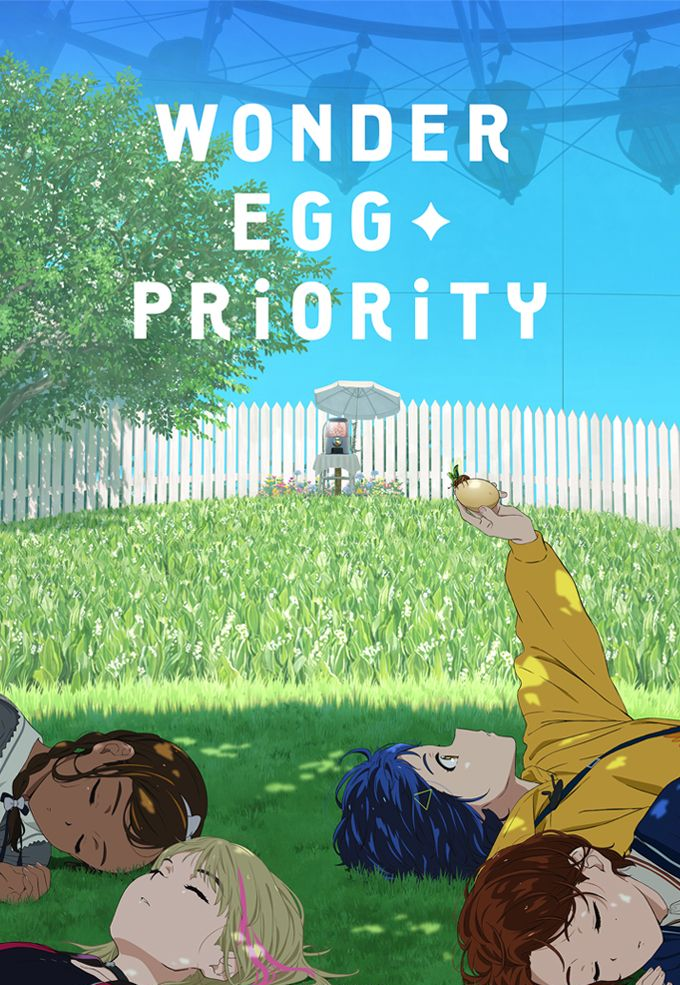
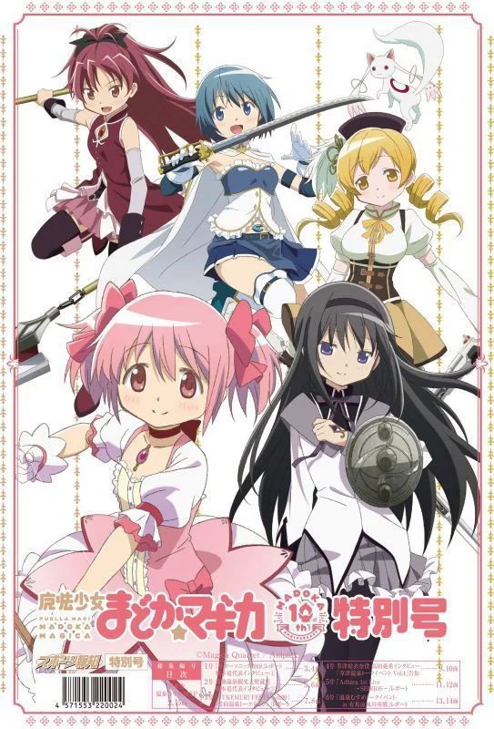
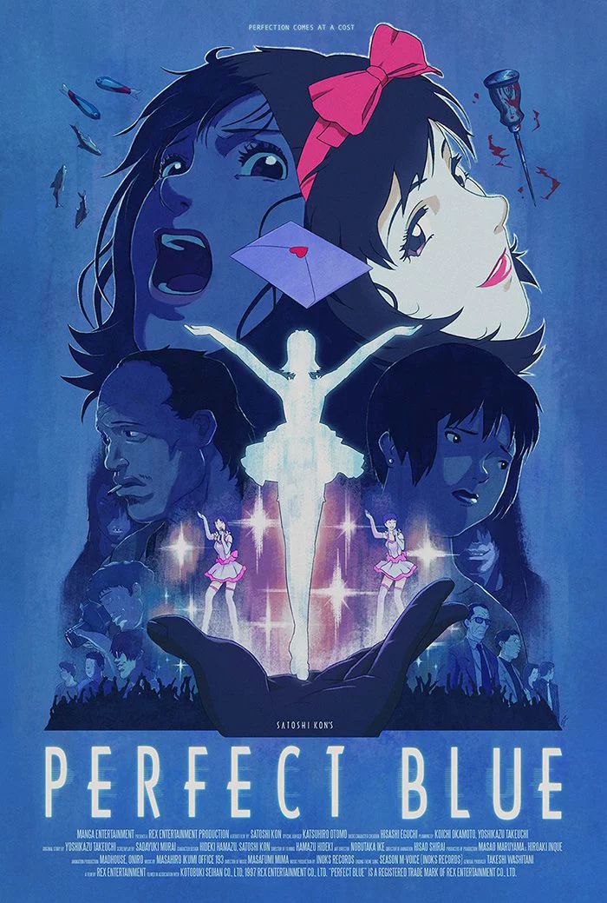
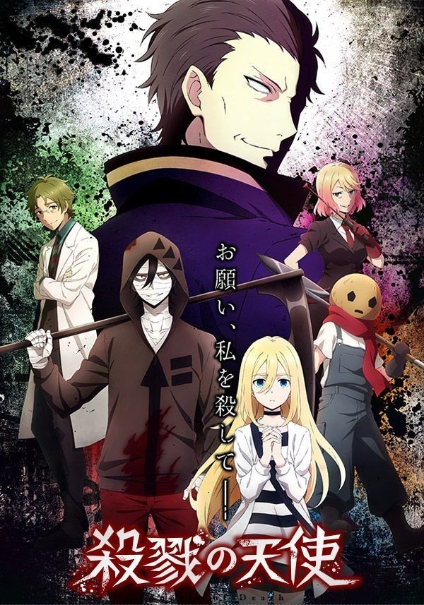

Wybór najlepszych serii/filmów anime
Horror Psychologiczny
Horror psychologiczny w anime to głęboko niepokojący gatunek, który zamiast na nagłym straszeniu skupia się na destrukcji ludzkiego umysłu. Fabuła kręci się wokół paranoi, szaleństwa, izolacji oraz traumy, zacierając granicę między rzeczywistością a halucynacją. Bohaterowie to często jednostki niestabilne, które pod wpływem manipulacji lub trudnych wydarzeń tracą kontrolę nad własną tożsamością. Gatunek ten mistrzowsko buduje napięcie i emocjonalny terror, zmuszając widza do kwestionowania tego, co widzi na ekranie. Wizualnie twórcy wykorzystują surrealistyczne obrazy, niepokojącą symbolikę oraz klaustrofobiczne kadry. Największym zagrożeniem nie są tu potwory, lecz mroczna strona ludzkiej natury i sekrety ukryte w ludzkiej psychice, co pozostawia widza z poczuciem głębokiego dyskomfortu długo po seansie.

Wonder Egg Priority to serial anime, który w surrealistyczny sposób porusza trudne tematy związane z dorastaniem i psychicznym kryzysem nastolatków. Fabuła skupia się na 14-letniej Ai Ohto, która po stracie przyjaciółki izoluje się od świata. Dręczona poczuciem winy dziewczyna otrzymuje tajemnicze „Cudowne Jajko”, które po rozbiciu przenosi ją do alternatywnej rzeczywistości snu. Jej zadaniem jest ochrona wykluwających się z jaj dziewcząt przed potworami uosabiającymi ich głębokie lęki i traumy, co daje Ai szansę na cofnięcie tragedii i uratowanie przyjaciółki. W tej misji bohaterka łączy siły z trzema innymi dziewczynami napędzanymi podobną stratą. Seria wyróżnia się piękną, kolorową animacją, która drastycznie kontrastuje z mroczną tematyką psychologiczną, potęgując odczucie niepokoju. To głęboka opowieść o tym, że przepracowanie trudnych emocji wymaga odwagi, a wzajemne wsparcie bywa najlepszym lekarstwem.

Puella Magi Madoka Magica to uznane anime dekonstruujące tradycyjny gatunek o magicznych dziewczynkach. Pod urokliwą i kolorową estetyką kryje się mroczny thriller psychologiczny o poświęceniu i rozpaczy. Gimnazjalistki Madoka i Sayaka otrzymują od tajemniczego Kyubeya propozycję: w zamian za spełnienie dowolnego życzenia mają zostać czarodziejkami i walczyć z wiedźmami. Przed paktem próbuje je powstrzymać Homura – nowa uczennica, która zna sekrety tego układu. Dziewczęta szybko odkrywają, że kontrakt niesie przerażające konsekwencje, a każde szlachetne życzenie rodzi proporcjonalne cierpienie. Surrealistyczne labirynty wiedźm potęgują klimat koszmaru, tworząc poruszające studium ceny za własne marzenia. Podobnie jak Wonder Egg Priority, seria genialnie wykorzystuje kontrast między motywem magical girl a horrorem psychologicznym.

Perfect Blue to kultowy thriller psychologiczny z 1997 roku w reżyserii Satoshiego Kona, uznawany za arcydzieło japońskiej animacji. Fabuła śledzi losy Mimy Kirigoe, popularnej piosenkarki popowej, która opuszcza swój zespół, by zostać aktorką. Zmiana wizerunku wiąże się jednak z bolesnym zderzeniem z bezwzględnym światem show-biznesu, a odważne role wywołują u niej wewnętrzny kryzys. Sytuację pogarsza obsesyjny stalker oraz internetowy blog szczegółowo opisujący jej prywatne życie. Narastający stres i lęk sprawiają, że psychika Mimy zaczyna pękać, przez co bohaterka przestaje odróżniać rzeczywistość od fikcji i własnych halucynacji. Gdy wokół dochodzi do serii krwawych morderstw, dziewczyna wpada w paranoję. Film zachwyca warstwą estetyczną, udźwiękowieniem oraz obrazowymi metaforami, stanowiąc genialne studium utraty tożsamości.

Angels of Death to popularny horror psychologiczny i thriller, który zdobył uznanie jako gra oraz serial anime. Fabuła skupia się na 13-letniej Rachel Gardner, która budzi się w podziemiach ponurego, opuszczonego budynku, nie pamiętając swojej przeszłości. Próbując uciec, spotyka Zacka – psychopatycznego mordercę uzbrojonego w kosę. Między bohaterami rodzi się nietypowy układ: inteligentna Rachel ma pomóc Zackowi wydostać się z pułapki, a on w zamian obiecuje spełnić jej mroczne życzenie i pozbawić ją życia, gdy tylko znajdą się na wolności. Wspólnie przemierzają kolejne piętra-labirynty, z których każde kontrolowane jest przez innego, niebezpiecznego strażnika. Walcząc o przetrwanie, bohaterowie stawiają czoła własnym traumom, co z czasem budzi między nimi specyficzną, głęboką więź.

Serial Experiments Lain to kultowe, awangardowe anime z nurtu cyberpunk i horroru psychologicznego. Fabuła skupia się na cichej 14-letniej Lain Iwakura, której życie zmienia się, gdy jej zmarła koleżanka z klasy zaczyna wysyłać e-maile do znajomych. Dziewczyna twierdzi w nich, że porzuciła ciało i żyje w The Wired – zaawansowanej sieci komputerowej. Chcąc rozwiązać tę zagadkę, Lain wkracza w cyfrowy świat, odkrywając w sobie niezwykły talent hakerski. Im głębiej wchodzi w sieć, tym mocniej zaciera się granica między rzeczywistością a wirtualem, a na jaw wychodzi istnienie jej drugiej, alternatywnej i przerażającej osobowości sieciowej. Seria w proroczy sposób, jeszcze przed erą mediów społecznościowych, ukazała zagrożenia związane z cyfryzacją. Zamiast akcji skupia się na klimacie paranoi oraz filozoficznych pytaniach o samotność w sieci i naturę ludzkiej tożsamości.